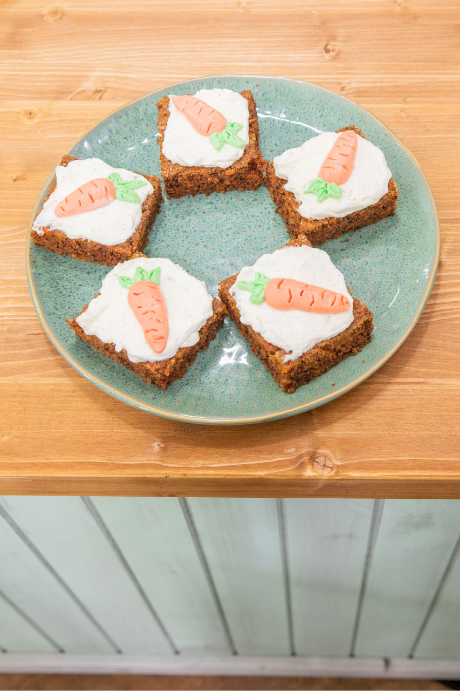
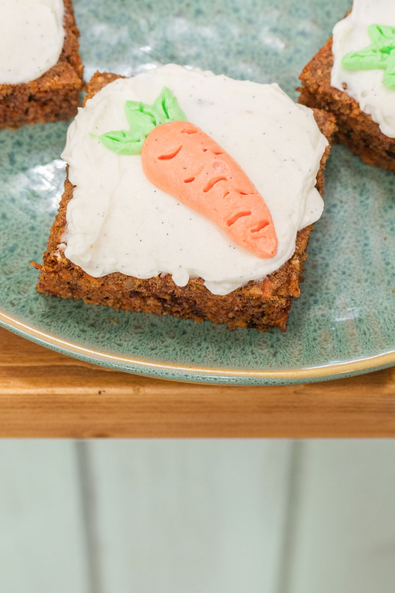
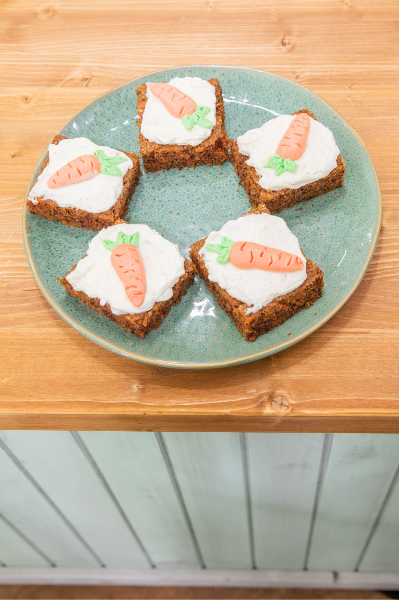
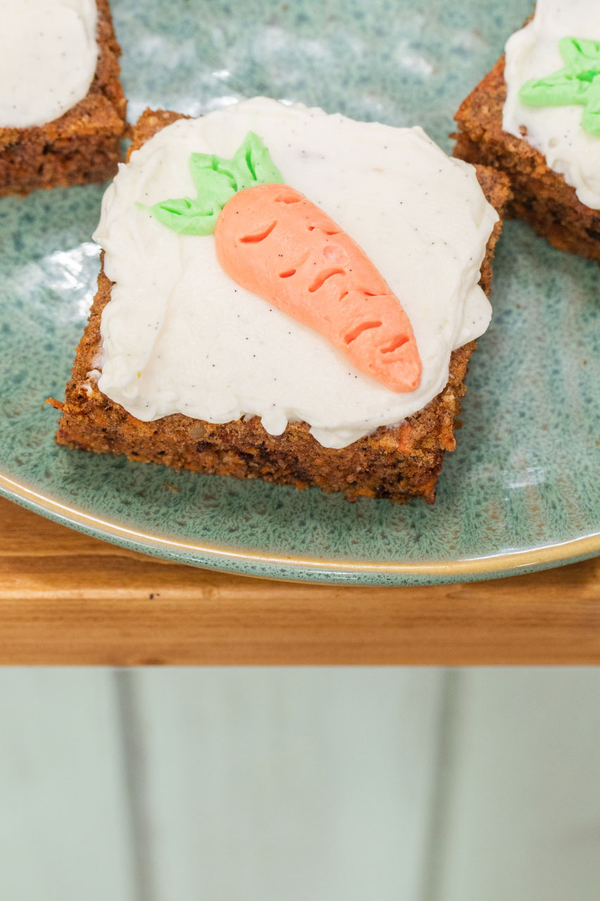

„Tento recept jsem poprvé ochutnala až v dospělosti a dostala jsem ho jako dárek od našich přátel. Neuvěřitelně mi zachutnal a hned jsem si musela říct o recept.“
Mrkvové řezy
1 hrnek hnědého cukru
4 vejce
¾ hrnku oleje
2 hrnky polohrubé mouky
2 lžičky sody
2 lžičky prášku do pečiva
¼ lžičky soli
2 lžičky skořice
¼ lžičky muškátového oříšku
¼ lžičky mletého nového koření
citronová kůra
4 hrnky nastrouhané mrkve
¾ hrnku nasekaných vlašských ořechů
Suroviny mícháme a přidáváme v tomto pořadí – vejce, cukr, olej, mouka, všechno koření, sůl, prášek do pečiva, soda, citronová kůra, mrkev a ořechy.
Pečeme na 180 °C dokud se nepřestane těsto lepit na párátko. Poté dáme vychladit.
Krém
100 g másla
200 g Lučiny
½ vanilky
lžička rumu
moučkový cukr
Vyšleháme máslo s Lučinou a ostatními ingrediencemi a potřeme řezy krémem.
Pusinky ve tvaru mrkve
1 bílek
70 g cukru
gelové barvy (oranžová, zelená)
Vyšleháme bílek s cukrem, obarvíme a zdobičkou a párátkem uděláme mrkvové pusinky, kterými nakonec řezy dozdobíme.
 
